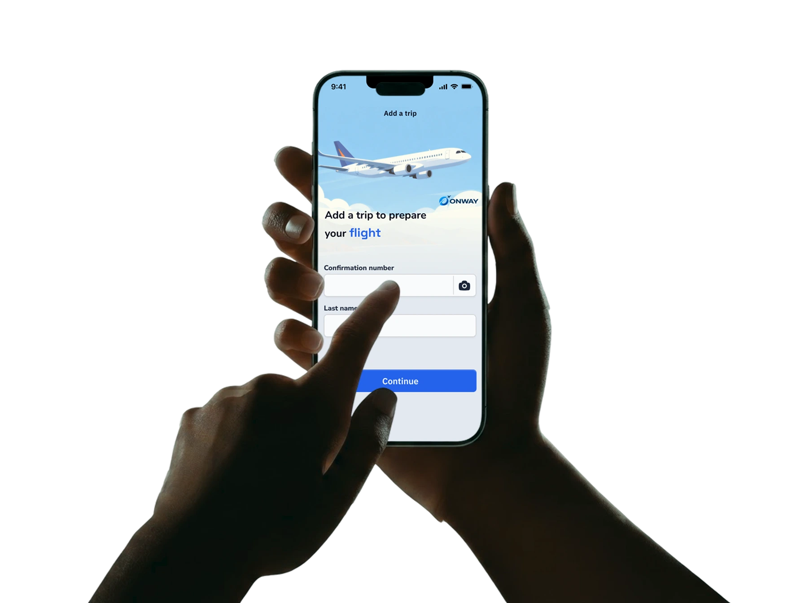
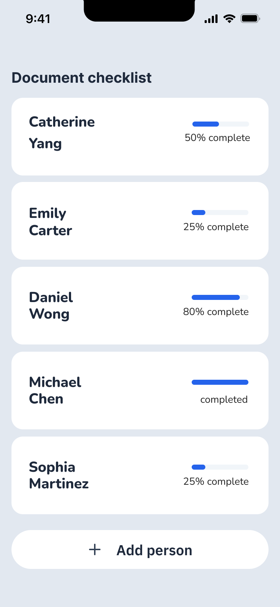
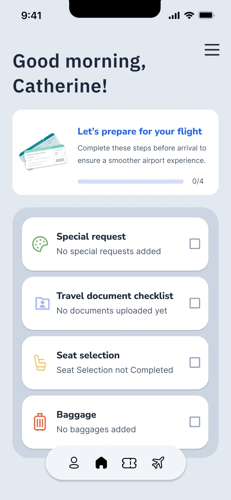
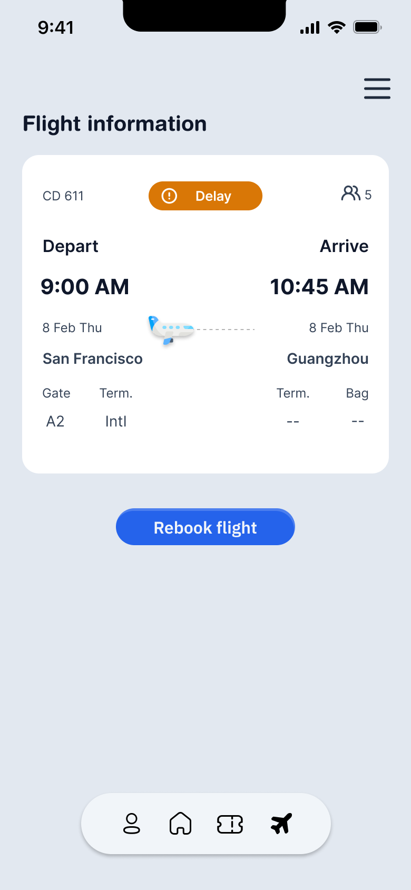
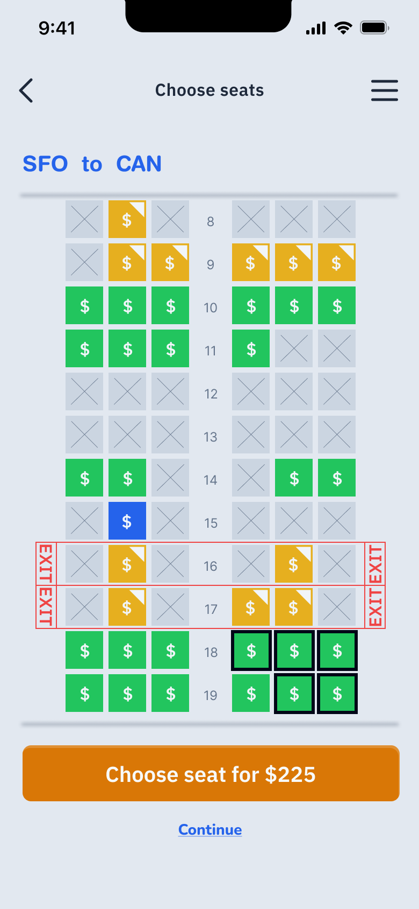
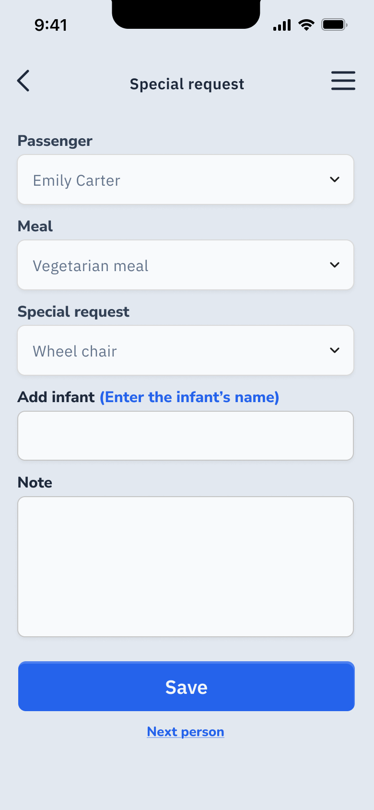
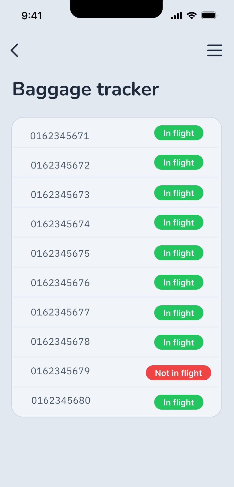
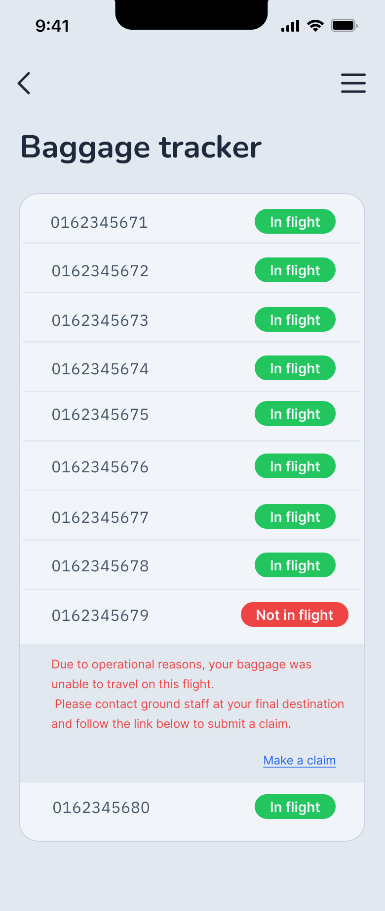
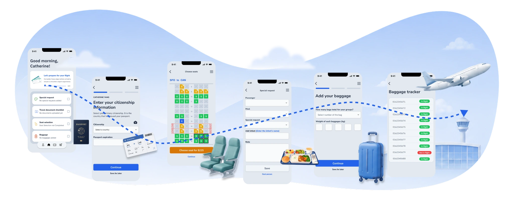

Unclear preparation
Travelers are unsure what they need to prepare, when to complete it, and whether they’re truly ready to fly.

What is Onway
Onway helps international travelers prepare for their journey before arriving at the airport. Travelers can check destination-specific travel document requirements, review baggage allowances, estimate baggage weight and fees, purchase additional baggage, and complete check-in and passenger needs in advance.
By moving more of the preparation into the time between booking and departure, Onway reduces last-minute tasks and uncertainty, making the airport experience less rushed and easier to navigate.
Problem
Travelers are unsure what they need to prepare, when to complete it, and whether they’re truly ready to fly.
Important travel requirements are spread across different sources, making it difficult for travelers to find what applies to their specific trip and know what action to take.
When something goes wrong, travelers may know there’s a problem but may not understand what to do next or what options are available.
Research
Existing airline tools support individual travel tasks well, but the experience remains fragmented across preparation, baggage, and travel disruptions.
| Feature | Alaska Airlines | Qatar Airways | United Airlines | KLM |
|---|---|---|---|---|
| Flight updates | ||||
| Document guidance | — | — | ||
| Baggage tracking | — | — | — | |
| Self-service rebooking | — | — | ||
| Pre-flight checklist | — | — | — | |
| Unified pre-flight journey | — | — | — | — |
“As an international student, I often travel home during school breaks. Student visa and travel requirements can change, so I need to keep checking the latest rules to make sure I have the right documents before I travel.”
“I travel often, so I don’t want to spend extra time figuring out check-in, baggage, or last-minute changes. I need a faster way to manage my trip and stay updated when plans shift.”
“When I travel with my family, there are many details to manage for each person. I want one place that keeps our documents, baggage, and preparation steps organized so the trip feels smoother and less stressful.”
Key insight
Long-haul international travel involves visas, travel documents, baggage requirements, and many other pre-flight preparations. Missing even a small detail can lead to extra fees, delays, or even boarding issues. By guiding travelers at each key stage from booking to departure, the airline experience can reduce uncertainty, prevent misunderstandings, and help both travelers and airlines move through the journey more efficiently. Instead of making travelers search for information, bring the right information to them at the right time.
Goals
Help travelers complete documents, baggage, and pre-flight requirements before arriving at the airport. Deliver the right information and reminders at the right time throughout the journey. Help travelers quickly understand and respond to delays, gate changes, or other disruptions.
Final solution
Travelers see required documents, completion state, and scanning actions before check-in reducing the chance that a missing passport or visa is discovered too late.


Scheduled, delayed, and cancelled states share one consistent flight card. When intervention is needed, the next recovery action appears in context so passengers can act without searching. If the person's flight is delayed or canceled, they can decide if they want to rebook the flight

Passenger assignment, special requests, infant information, and accessibility needs are handled within the app experience, instead of needing to ask airline staff for each individual need.


Travelers can track each checked bag by its tag number and see whether it is on their flight. If a bag is left behind, a clear explanation and a direct claim link show them what to do next.


Designing Onway meant looking beyond individual airline tasks and considering the entire journey from booking to departure. The challenge was to connect these moments into one continuous experience while still giving travelers the flexibility to prepare at their own pace. Onway structures the journey into clear stages, keeps progress visible, and helps travelers understand what needs their attention next.

Onway started from my experience working as airline ground staff, where I saw how missing documents, baggage confusion, and unclear procedures could create problems at the airport. I initially focused on making check-in and travel requirements easier to access, but I realized the bigger opportunity was to help travelers prepare earlier.
That realization shaped Onway into a journey-based experience that guides travelers from booking to departure. Instead of asking travelers to research everything themselves, Onway provides destination-specific preparation, timely reminders, and step-by-step guidance based on where they are in their journey.
Onway is still a concept, and a real product would depend on reliable travel-regulation data and integration with airline systems. But I believe there is an opportunity to help passengers arrive at the airport better prepared while reducing confusion and unnecessary work for airline staff. If Onway could prevent avoidable travel issues, shorten check-in time, and give travelers more confidence before an important international trip, I’d consider that a meaningful outcome.